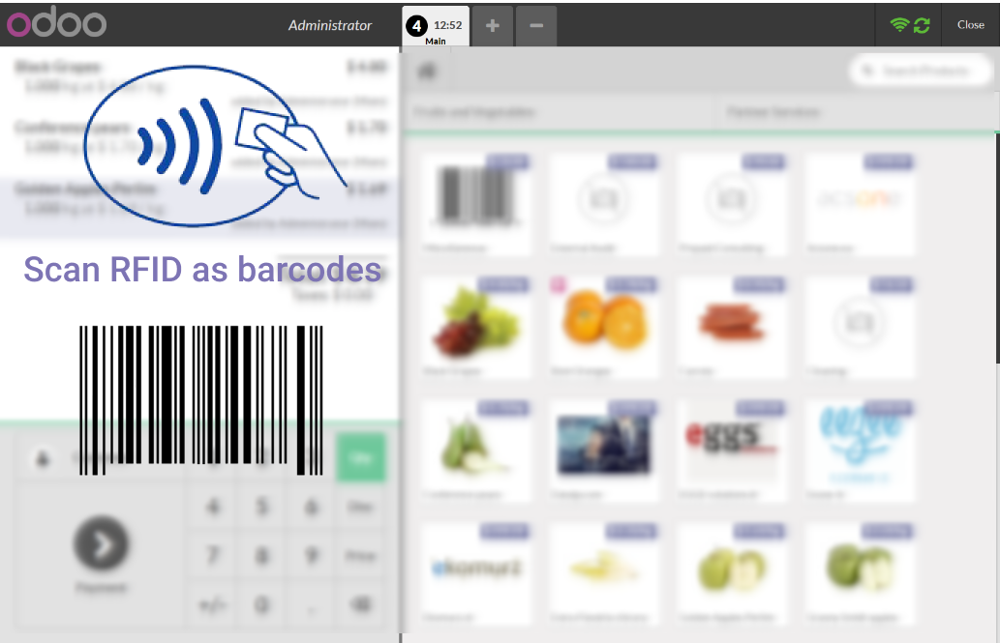

<section class="oe_container">
    <div class="oe_row oe_spaced">
        <div class="oe_span12">
            <h2 class="oe_slogan">Web-NFC support in POS</h2>
            <h3 class="oe_slogan">Use NFC readers to scan RFID as barcodes</h3>
        </div>
    </div>
</section>

<section class="oe_container">
    <div class="oe_row oe_spaced">
        <div class="oe_span12">
            <div style="padding: 0;font-size: 150%;">
                POS reacts in the same way as if RFID was scanned via normal RFID reader
            </div>

        </div>
    </div>
</section>

<section class="oe_container">
    <div class="oe_demo oe_picture oe_screenshot">
        
    </div>
    <p></p>
    <font style="font-size: 120%;">Follow <i>Documentation</i> tab to see Configuration details</font>
</section>

<section class="oe_container" style="margin-top:80px">
    <div class="oe_row oe_spaced">
        <div class="oe_span8">
            <h2>Need our service?</h2>
            <p class="oe_mt32">Contact us by <a href="mailto:apps@it-projects.info">email</a> or fill out <a href="https://www.it-projects.info/page/website.contactus

" target="_blank">request form</a></p>
            <ul>
                <li><a href="mailto:apps@it-projects.info">apps@it-projects.info <i class="fa fa-envelope-o"></i></a></li>
                <li><a href="https://www.it-projects.info/page/website.contactus " target="_blank">https://www.it-projects.info/page/website.contactus <i class="fa

fa-list-alt"></i></a></li>
                <li><a href="https://m.me/itprojectsllc" target="_blank">https://m.me/itprojectsllc <i class="fa fa-facebook-square"></i></a></li>
                <li>skype@it-projects.info <i class="fa fa-skype"></i></li>
            </ul>
        </div>
        <div class="oe_span4">
            <div class="stamp" style="width:200px;">
                <div style="margin-top: 15px;
                            position: relative;
                            font-family:'Vollkorn', serif;
                            font-size: 16px;
                            line-height: 25px;
                            text-transform: uppercase;
                            font-weight: bold;
                            color: #75526b;
                            border: 3px dashed #75526b;
                            float: left;
                            padding: 4px 12px;
                            -webkit-transform: rotate(-3deg);
                            -o-transform: rotate(-3deg);
                            -moz-transform: rotate(-3deg);
                            -ms-transform: rotate(-3deg);">
                    Tested on Odoo<br>10.0 community
                </div>
                <div style="margin-top: 15px;
                            position: relative;
                            font-family:'Vollkorn', serif;
                            font-size: 16px;
                            line-height: 25px;
                            text-transform: uppercase;
                            font-weight: bold;
                            color: #75526b;
                            border: 3px dashed #75526b;
                            float: left;
                            padding: 4px 12px;
                            -webkit-transform: rotate(0deg);
                            -o-transform: rotate(0deg);
                            -moz-transform: rotate(0deg);
                            -ms-transform: rotate(0deg);">
                    Tested on Odoo<br>10.0 enterprise
                </div>
            </div>
        </div>
    </div>
</section>